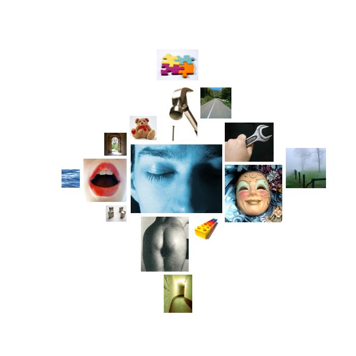

obama.txt
  consciousness_alteration
consciousness_alteration dreams, dreams, dream, imagined, dreams, dreams, dreams
 positive_affect
positive_affect happiness, smile, gay, funny, relief
 anality
anality shattered
 hard
hard hard, hard, hard, hard
 instrumental_behavior
instrumental_behavior student, work, study, studying, worked, work, assembly, studied, bought, success, achieve, pursuit, business, paying, work, work, workers, jobs, jobs, pay, job, pay, money, work, counties, money, achieve, make, make, available, record, work, jobs, jobs, afford, profits, use, soldiers, win, earn, found, pursued, risk, use, ingredient, pay, makes, makes, work, pursue, preparing, worker's, working, jobs, make
 orality
orality cook, pearl, fed, choking
 diffusion
diffusion shade, uncertainty
 abstraction
abstraction possibilities, believing, know, diversity, knowing, possible, truths, certain, true, know, think, think, idea, them, reality, plant, problems, know, learn, know, know, problems, sure, know, choice, choice, chosen, understands, ideals, defined, choices, believes, them, believes, themselves, believes, believes, basic, believes, know, why, thought, thought, thought, truth, why, tend, real, knows, believes, knows, belief, choose, belief, belief, them, them, almost, thinks, something, believes, belief, belief, believe, believe, believe, history, choices
 unknown
unknown magical, odds
 voyage
voyage search, drive, shipping, immigrants
 affection
affection patton's, love, grateful, like, devoted, devotion, friends, loved, loved, embrace, like, like, friends
 concreteness
concreteness place, here, side, across, back, west, away, here, here, over, among, at, at, at, back, east, ahead, off, at, open, where, overseas, here, at, where, back, at, east, long-term, alongside, south, side, somewhere, between, rounded, out, away, out, distant, place, ahead, middle, across, at, backs, across, out, long
 brink-passage
brink-passage line, barrier, door, doors, hall, road
 order
order simple, simple, measuring, grades, divide, listened, divide, class
 water
water washington, shores, washington